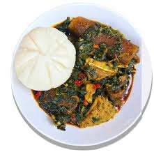

Semoeforiro

Semo with Eforiro soup
Efo Riro needs no introduction as it’s one of the most popular vegetable soups in Nigeria and an absolute favourite of the Yorubas.
Ingredients
Semovita
Fish (smoked
Pepper, onion, scotch bonnet
Seasonings
Ginger n garlic
Water
Spinach
Red oil